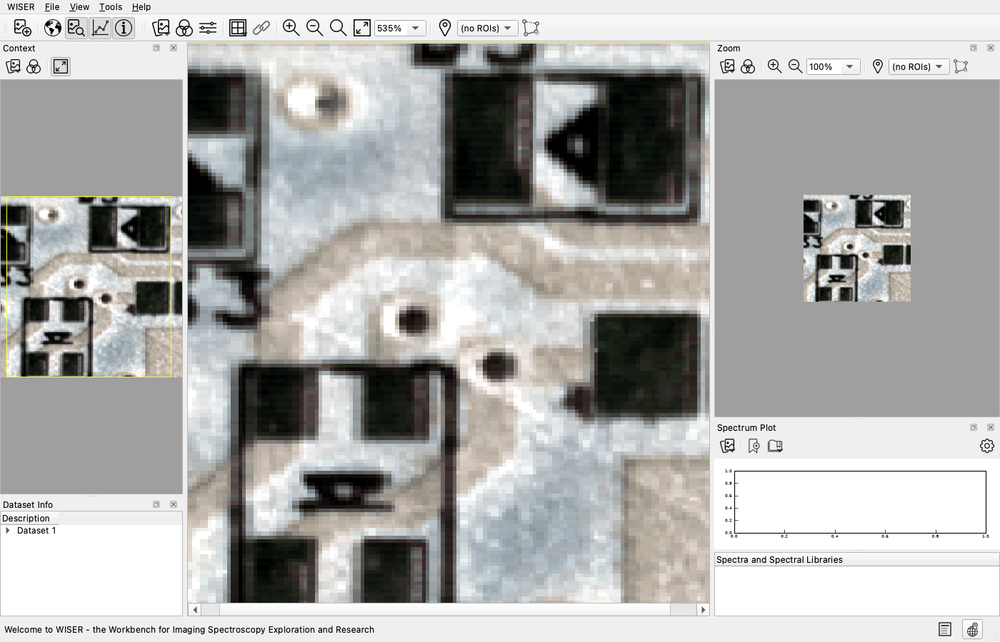
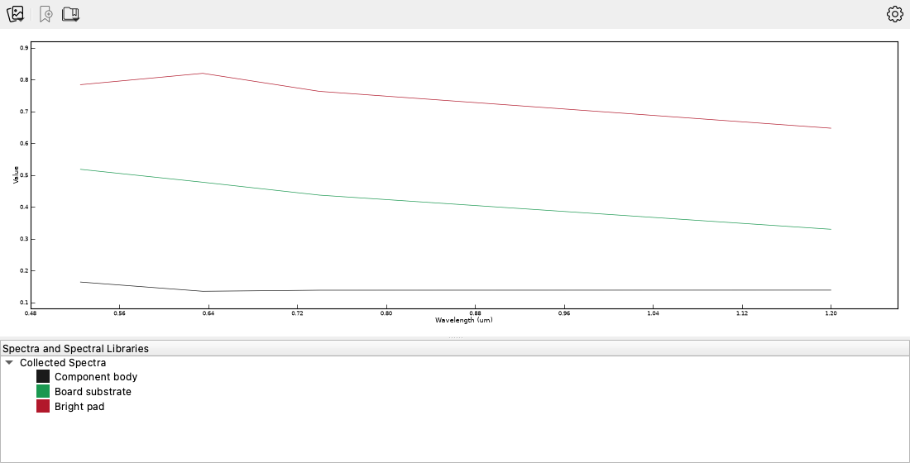

8. Bench and Close-Range Data#
Goal: see that WISER treats a laboratory cube exactly like an airborne one, and learn what a bench instrument needs from you that an airborne product has already had done to it.
Data: src/test_utils/test_datasets/circuit_4_100_150_um.hdr — a 150 × 150
pixel, 4-band close-range scene of a printed circuit board at 0.525, 0.635,
0.740 and 1.200 µm. Note the units: micrometers, not nanometers.
Reference: Opening Data Files, Spectra and Spectral Libraries, Filters and Smoothing.
A cube is a cube#
Nothing in WISER assumes an aircraft or a satellite. A cube is x, y and wavelength, and every tool in the previous seven tutorials works the same way on one measured 30 cm from a bench as on one measured from orbit. Bench-scale imaging spectrometers sort plastics for recycling, verify pharmaceutical tablets, detect bruising in fruit, authenticate pigments in paintings, and inspect electronics.
This tutorial opens a close-range scene, reads spectra off it, and then spends most of its length on the part that actually differs: what you have to do yourself before laboratory measurements mean anything.
Step 1 — Open it, and check the units#
Choose File ▸ Open… and select
circuit_4_100_150_um.hdr.If any of the four panes is not showing, click its pane toggle on the Main Toolbar. Then click Zoom to fit.
Click Stretch builder, select Linear Stretch, click 2.5% linear, and click OK.


At 150 × 150 pixels over a few centimeters of board, individual pixels are large on screen. The dark rectangles are component bodies, the pale field is board substrate, and the small bright spots are pads and plated through-holes.
Look at the Dataset Info pane and find the wavelengths. They read 0.525 to 1.200 in micrometers, because that is what the ENVI header declares, and WISER labels the spectrum-plot axis to match rather than assuming nanometers.
Interpretation
Confirm the wavelength units on any instrument you have not used before. A cube whose axis is off by a factor of a thousand will still plot, and will still be wrong against every library you compare it against. Nothing in the software can catch this for you, because both are valid units.
Step 2 — Collect a spectrum per material#
Click one pixel on a dark component body. Click Collect spectrum on the Spectrum Plot toolbar.
Right-click the new spectrum in the list below the plot, choose Edit…, and set Spectrum name: and Plot color: in the Spectrum Information dialog.
Repeat for a pixel on the pale board substrate and one on a bright pad.
Pick pixels in the middle of a uniform area. At this pixel size an edge pixel is a mixture of both sides.


The component body is dark and almost flat. The board substrate falls steadily across the range. The bright pad is highest everywhere and turns over slightly, peaking at 0.635 µm rather than at the shortest band.
Most of what separates these curves is brightness, but not all of it. Divided by its own mean, each curve has a different shape:
0.525 |
0.635 |
0.740 |
1.200 µm |
|
|---|---|---|---|---|
Component body |
1.14 |
0.94 |
0.96 |
0.96 |
Board substrate |
1.18 |
1.08 |
0.99 |
0.75 |
Bright pad |
1.04 |
1.09 |
1.01 |
0.86 |
The last column is the one that carries information a grayscale photograph would not: the substrate loses a quarter of its relative reflectance by 1.200 µm while the component body holds nearly flat. That difference, not the brightness, is what a classifier should key on.
What four bands cannot do#
Be honest about the limits of this scene before drawing conclusions from it. The four bands are strongly correlated (the three visible ones at 0.986 to 0.995), and a principal-component transform puts 97% of the variance in the first component, with all four loadings the same sign. A first component like that is brightness. Run K-means on this cube and the clusters come back sorted by brightness, which is what a threshold on a single band would have given you.
So this fixture is the right size to practice the mechanics on and the wrong size to identify a material with. Naming the three curves above took looking at the image, not looking at the spectra. Identification needs narrow, diagnostic absorptions, and those need tens to hundreds of bands: the C–H overtones that separate plastics sit near 1700 and 2300 nm, and nothing in this cube reaches past 1200 nm.
That is the argument for a real instrument rather than a four-filter camera, and the rest of this page is about using one.
Taking this to your own instrument#
Your own bench system will give you hundreds of bands. What to get right:
Calibrate to reflectance. Image a white reference panel (Spectralon or similar) and a dark frame under the same illumination and exposure, then compute
with band math. Set Type to Image Cube for all three variables: WISER
guesses a type from each name, and it guesses Spectrum for S and Image
Band for W and D. Everything spectroscopic depends on this calibration.
Raw digital numbers carry your lamp’s spectrum and your sensor’s response, and
no reference library will match them.
Watch the geometry. Close-range imaging has strong, uneven illumination and specular highlights. A shiny solder pad can saturate at one angle and read near-zero at another. Use diffuse illumination, and prefer SAM and continuum removal, both of which discount brightness, over methods that depend on absolute level.
Save your own library. Image known reference materials, collect their spectra, and export them as an ENVI spectral library. Then SAM and SFF work against your materials under your optics, which is often better than a published library for the specific question you are asking.
Smooth before differentiating. Bench spectra of dark materials are noisy. Right-click the image and choose Filters ▸ Savitzky-Golay Filter…. The dialog asks for a Window Length (odd) and a Polynomial Order. It smooths along the spectral axis while preserving band shape and depth better than a moving average does. The same menu offers Mean, Median and Gaussian Smoothing Filter…, which can smooth spatially or spectrally. See Filters.
Questions to think about#
Why must a bench cube be converted to reflectance before you compare it with a spectral library?
A specular highlight saturates a copper pad in three bands. What does that do to a SAM result for that pixel, and to a linear-unmixing result?
You want to distinguish two visually identical black plastics. What would you need from your instrument that a four-band system cannot give you?
Why is a library you measured yourself often better than a published one for an inspection task?
Where this is used#
Field |
Scene |
What to look for |
|---|---|---|
Recycling |
Mixed plastic flakes |
C–H overtones, 1600–1800 nm and 2200–2400 nm; separates PET / HDPE / PP / PS |
Food quality |
Fruit surface |
Water at 970 nm and 1450 nm; bruising shows before it is visible |
Pharmaceutical |
Tablets |
API and excipient distribution; blend uniformity |
Cultural heritage |
Painting or manuscript |
Pigment identification; underdrawing in the NIR; retouching |
Forensics |
Documents, fibers |
Ink discrimination where inks are visually identical |
Soil science |
Core or sample tray |
Organic carbon, clay mineralogy, moisture |
What you can now do#
Open a close-range cube and confirm its wavelength units before trusting them
Read spectra off materials that are not landscape
Tell brightness differences from shape differences, and say which your data can support
Calibrate a bench cube to reflectance, and build a library for your own optics
Next: back to the tutorials index, or on to the User Manual for the full reference.